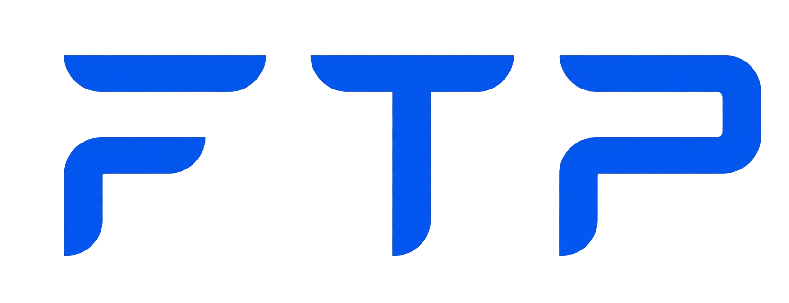
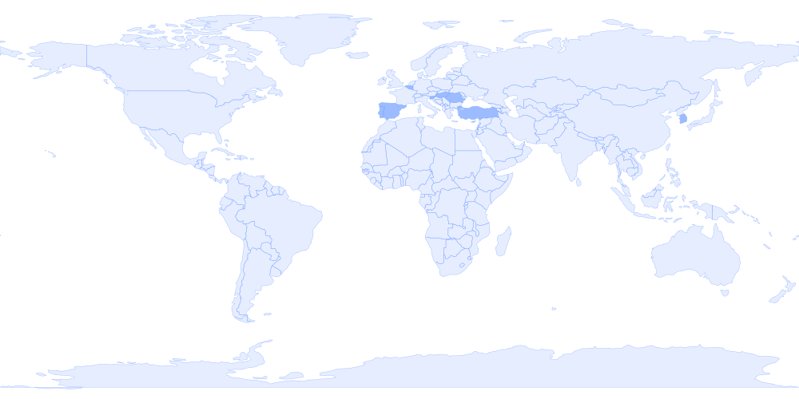
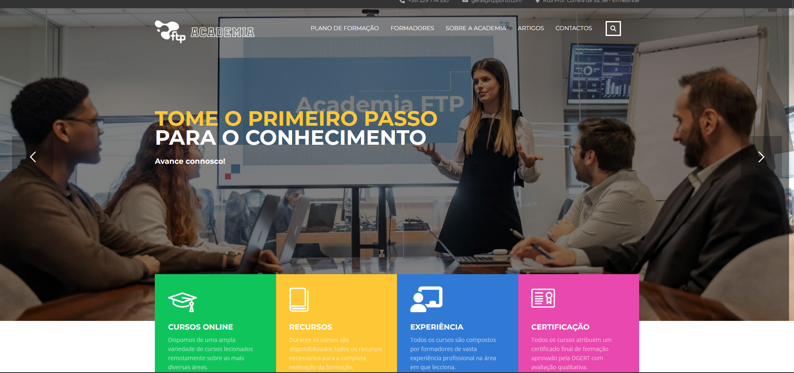
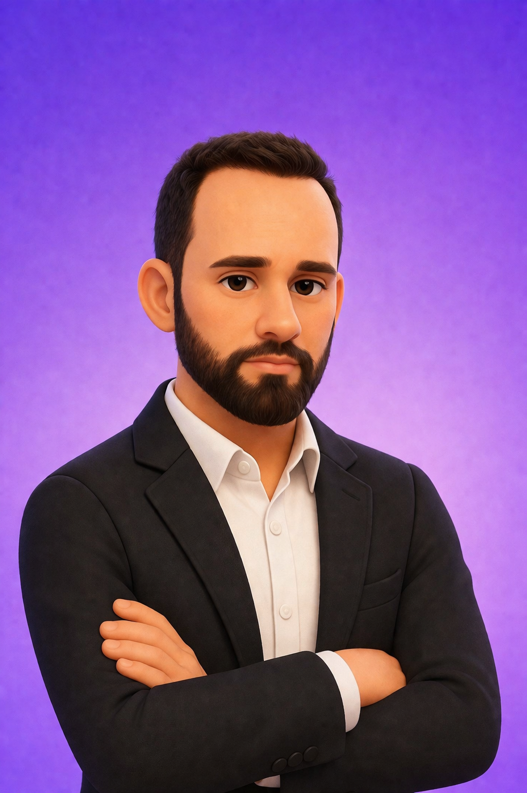
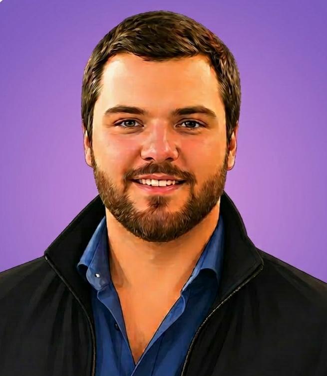
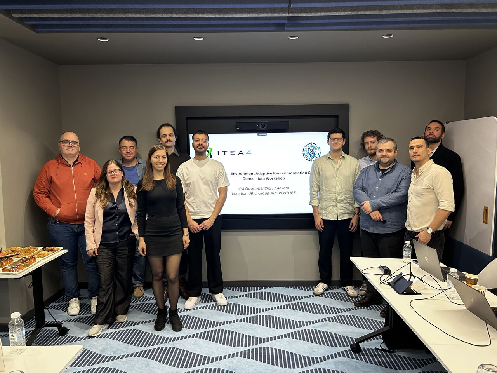
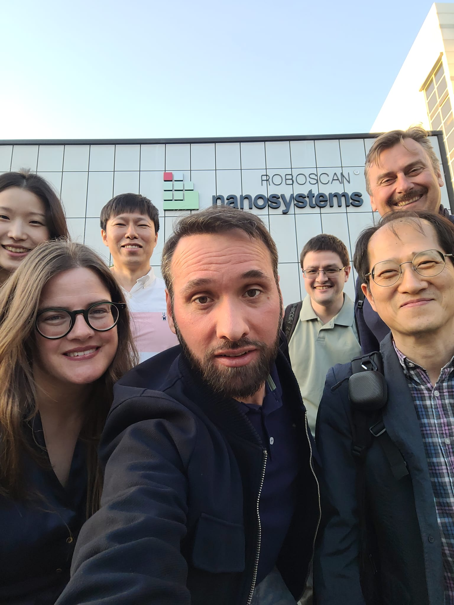
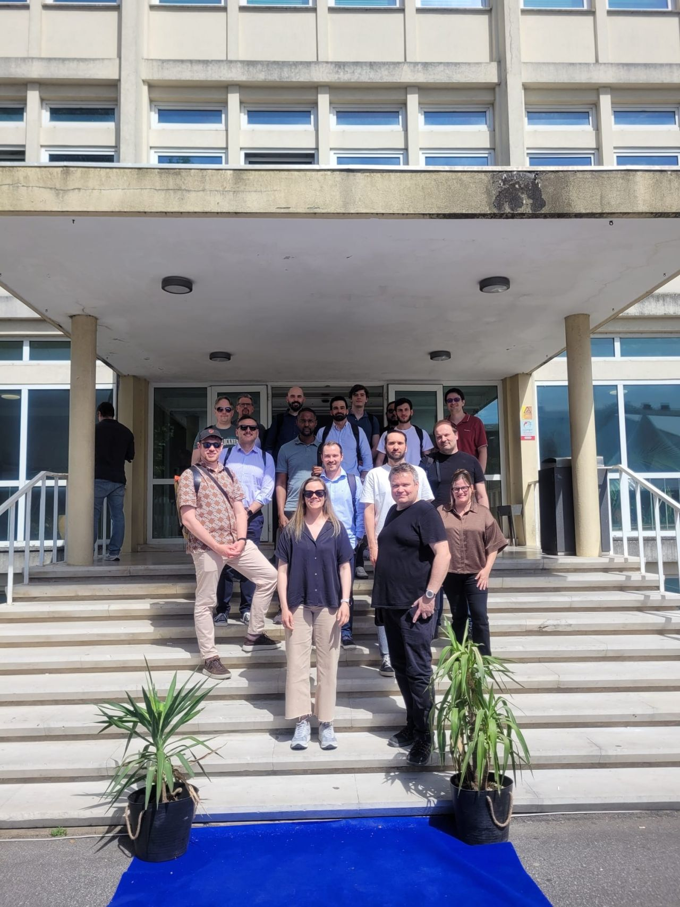

R&DStudioEst. 1999
From research to reality.
We are FTP — a Portuguese laboratory translating scientific investigation into applied, high-impact enterprise systems.

LabR&DStudioEst. 1999
We are FTP — a Portuguese laboratory translating scientific investigation into applied, high-impact enterprise systems.
We don't build software. We build the layer underneath where research becomes a button you can press, a decision a machine can explain, a cost that quietly disappears.
Intelligent Recommendation for Remote Services
A federated, explainable recommendation framework that learns across nine sectors — IT, healthcare, justice, e-commerce, telemarketing, industry, logistics, electronics, software — and explains every suggestion it makes. Open-source. Privacy by design.
Smart Industry · Explainable AI for Industrial Control
Closing the gap between black-box AI and high-precision factory floors. Computer Vision over sensor streams, automatic 3D retopology, autonomous mobile robots — under an XAI layer that makes every decision auditable.
Enterprise Large Foundation Models
A risk-based engineering framework that lets enterprises adopt foundation models without losing control of data, IP or compliance. Modular ERP integration. Cegid PHC-aware chatbot. Foundation models living inside the systems your business already runs on.
Cognitive Assistant for Phygital Environments
A retail platform fusing AI, IoT, blockchain and deep learning — five use cases spanning smart manufacturing safety, store ops, employee well-being and personalised commerce.
Cognitive Service Demand Management
Voice + text understanding for a real e-commerce use case (Nimco, Portuguese footwear). Proof that NLP-driven service management could quietly outperform rules-based ticketing.

 PortoHQ
PortoHQ
 MadridEXPAI
MadridEXPAI
 BucharestOMD · EARS
BucharestOMD · EARS
 AnkaraEARS · EXPAI
AnkaraEARS · EXPAI
 DaeguEXPAI plenary
DaeguEXPAI plenary
 Canada
Canada
 Ukraine
Ukraine
 Great Britain
Great Britain
Companies that integrate applied AI don't react to the market — they anticipate it.
With AI, the limit is no longer time — it is imagination.
Innovation is born when we turn recurring effort into permanent solutions.
Blending a little bit of magic with a lot of intelligence to build the future.
From the chaos of ideas to the elegance of outcomes — turning them into flight.
Continue scrolling — the lab, in detail.
↓Driving digital transformation through advanced AI and specialised software engineering. Five domain-agnostic engines you can drop into a real business, each one a side door from a peer-reviewed paper.
A hybrid explainable recommendation system that delivers personalised suggestions with clear, evidence-based reasoning behind every result.
Our Hybrid Explainable Recommendation System is designed to deliver not only highly relevant recommendations, but also clear and meaningful explanations behind each decision.
In many systems, recommendations are presented as opaque outputs — users see what is suggested, but not why. This solution addresses that gap by combining advanced recommendation modelling with built-in explainability, making every result both accurate and interpretable.
The system analyses multiple layers of user and product signals to generate personalised recommendations, including:
Each result is accompanied by a short, natural-language explanation grounded in real data — derived directly from the evidence used during ranking.
Understanding why something is recommended increases trust, improves user experience, and supports better decision-making. The system ensures that:
The system uses a hybrid recommendation model to rank items based on multiple signal sources. An integrated language model translates structured evidence into short explanations, ensuring every recommendation is both data-driven and understandable.
This system serves as a foundational layer adaptable into project-specific solutions. Its modular design allows integration into different platforms while preserving both recommendation performance and explainability.
Voice prosody, facial micro-expressions and spoken content fused into a unified emotional profile — real-time, privacy-aware, federated-ready.
Our Multimodal Emotion Recognition system reads the full signal a person sends: how they sound, how their face moves, and what they say. Instead of relying on a single channel, it fuses audio, video and text into one coherent emotional state — with both category and intensity.
The architecture is designed for sensitive contexts: inference can run locally on the edge, models are federated-ready so personal data never has to leave the device, and the same engine works across customer-facing and workplace deployments.
Improves customer satisfaction by adapting to emotional context in real time. Detects stress, discomfort and disengagement early — before they escalate. Supports employee well-being via continuous, opt-in sentiment monitoring.
Three specialised encoders extract signals from voice, face and text in parallel. A fusion layer combines them into a unified emotional embedding, which a downstream head translates into category + intensity predictions. The whole pipeline runs on commodity hardware with low latency.
Drop the engine into a contact-centre, a retail experience, an HR well-being programme or a clinical study — the same core adapts via lightweight fine-tuning. The system is the multimodal foundation behind our work in EARS and ships with privacy controls aligned with GDPR and the AI Act.
An intelligent conversational interface that simplifies how businesses interact with their management systems — invoices, reports, forecasts and answers, without the menus.
Our ERP Virtual Assistant turns the ERP from a menu-driven tool into a conversational partner. Instead of navigating layers of forms and reports, users simply ask — and the system delivers documents, summaries, forecasts and answers grounded in their own business data.
The assistant connects directly to Cegid PHC, Sage, Cegid Primavera and other ERPs, blending natural language understanding with domain-specific business logic so that every reply is both contextual and operationally accurate.
Reduces time spent on repetitive admin. Makes business data accessible to non-technical users. Enables faster, data-informed decisions. Provides proactive insights instead of reactive reporting.
A natural-language layer interprets user intent, maps it to ERP-native operations, and orchestrates the right modules to answer or act. Forecasts and summaries are produced by domain models trained on the client's own historical data, so output stays specific and accountable.
Built as a modular layer on top of the existing ERP, it extends without disrupting. New connectors, new business rules and new data sources can be added incrementally — the assistant evolves alongside the operation.
AI-powered systems that execute tasks independently, make informed decisions, and coordinate operations with minimal human intervention.
Our Autonomous Agent Systems turn isolated automations into a coordinated, goal-driven workforce. Each agent owns a slice of the operation — planning its own actions, calling the right tools and APIs, and adjusting based on feedback — so the whole pipeline keeps moving without a human at every step.
Agents collaborate through a shared orchestration layer that tracks state, handles handoffs and resolves conflicts. The result is a system that operates more like a team than a script: resilient to surprise, capable of branching, and observable end-to-end.
Adapts dynamically to context without manual intervention. Integrates multiple systems into unified workflows. Acts proactively rather than reactively. Reduces operational overhead and human error.
A central orchestrator decomposes the goal into tasks and assigns them to specialised agents. Each agent reasons over its own tools, calls APIs, and reports back. The orchestrator keeps a shared memory of state and outcomes, enabling agents to coordinate, retry intelligently, and learn from previous runs.
Built as a modular framework: new agents, new tools, new domains can be added without rewriting the core. The same engine underpins automations across customer service, operations and back-office processes — and is reused inside our work on EARS and ELFMO.
Transforms high-poly models into optimised low-poly meshes while preserving essential detail and visual fidelity. Clean, quad-based topology suitable for animation and real-time applications.
Our Retopology Converter takes dense, scan-derived or sculpted geometry and rebuilds it as clean, animation-ready topology — automatically. The result preserves silhouette and surface detail while replacing chaotic triangulation with predictable quad flow.
The system was designed to live inside production pipelines: studios can drop in raw assets and get back meshes that are immediately usable for rigging, baking, real-time rendering or industrial simulation — without weeks of manual cleanup.
Cuts production time and manual effort. Ensures consistent topology quality across an entire pipeline. Enables faster iteration and scaling for game development, film and industrial visualisation studios.
The pipeline analyses the input mesh's curvature, feature lines and topology flow, then generates a new quad-dominant surface aligned to those features. UVs and normals are transferred from the source so the converted asset retains its original look while running orders of magnitude lighter.
The converter is modular: studios plug it into existing DCC workflows (Blender, Maya, Houdini) or call it as a service from their own asset pipelines. The same engine underpins our work in EXPAI (industrial 3D) and is reused across consumer and enterprise projects.

An innovative learning platform designed to empower the professionals of tomorrow. High-quality training programs across a wide range of technology fields, with practical learning, continuous development and tailored learning paths.
Open to candidates between 18 and 40 years old. No strict academic prerequisites for beginner courses. What matters: genuine interest in technology, motivation to learn and evolve.

FTP's dedicated environment for designing, prototyping and delivering custom business applications at speed. Modular components and modern development practices translate complex business requirements into functional digital products.
From internal tools to customer portals and mobile apps. We combine reusable building blocks with tailored business logic so every application fits operations and scales as they evolve.
The lab's active and recent international collaborations — the Problem each one set out to solve, and the Solution we shipped.
Modern service organizations face increasing complexity in managing incoming requests across multiple channels and domains. Traditional e-commerce, ticketing and support systems struggle with inefficient allocation, high operational costs, lack of intelligent prioritization, limited NLP understanding and fragmented knowledge bases.
A cross-domain cognitive service management platform leveraging ML, Deep Learning, NLP and optimisation. Real-world use case with Nimco — an AI-powered chatbot with text + voice input that understands customer queries, extracts intent, applies ML filtering and recommends footwear with personalised reasoning.
Existing Service Desk Management tools are predominantly focused on the IT sector, and AI/ML/DL/NLP integration is still in early stages. There is no framework today capable of delivering SDM solutions that adapt across healthcare, e-commerce, marketing and sales.
An innovative framework for the automatic and efficient allocation of the most suitable agent to each request, optimising remote support across multiple domains. Multi-domain recommenders, explainable AI, advanced client/agent profiling with emotional and behavioural signals, dynamic workflows. Validated in nine sectors. Components released as open source.
The transition to Smart Industry faces critical obstacles: AI "black boxes" hard to interpret, traditional 3D modelling that yields heavy geometry hindering real-time simulation, and a lack of seamless integration between sensor data, autonomous robotics and design tools.
An XAI framework that promotes a flexible, controlled, transparent digital environment. Centralised sensor collection, Computer Vision making AI decisions understandable, automatic retopology and procedural modelling for real-time-ready geometry, optimised AMR operation. Direct gains in production-line efficiency and reliability.
Companies want the transformative potential of Generative AI and LFMs (GPT, BARD, FALCON) but face substantial costs, heavy resource allocation, strict compliance. Concerns around data security, IP, bias, fairness, transparency and alignment with GDPR / AI Act make reliable adoption difficult — and monolithic ERPs (Cegid PHC, Cegid Primavera, Sage X3, SAP, Dynamics) limit customisation and AI integration.
A risk-based engineering framework enabling fast, informed, trustworthy LFM adoption in enterprise environments. Methods, tools, sector benchmarks, open-source infrastructures, and evidence-based evaluation aligned with GDPR + AI Act. National use case: a modular integration platform evolving from monolith to microservices, with a specialised Cegid PHC chatbot.
The retail sector plays a crucial role in the EU economy but faces significant challenges in sustainability, digitalisation and skills. Single-modality systems and static in-store experiences struggle to deliver the personalised, adaptive interactions modern shoppers and employees expect.
An initiative transforming the shopping experience and the working environment in retail through AI, Blockchain, IoT and Deep Learning. Personalised experiences, optimised robots and kiosks, innovative resource management, employee tracking and customer engagement — five use cases spanning consumer UX, personalisation, satisfaction, manufacturing safety and store operations.
The lab's work is checked in the only place that counts — by other labs. A non-exhaustive selection from the last 18 months.
Companies that integrate applied AI don't react to the market — they anticipate it.

Limits shape vision. Direction transforms imagination into reality.
From the chaos of ideas to the elegance of outcomes — turning them into flight.

With AI, the limit is no longer time — it is imagination.
Innovation is born when we turn recurring effort into permanent solutions.
When all think alike, then no one is thinking.
Blending a little bit of magic with a lot of intelligence to build the future.
Exploring AI, international R&D collaborations, and industrial technology — straight from the consortia.

On November 4 and 5, 2025, Ankara became the meeting point for the international consortium of the EARS project — Environment Adaptive Recommendation System. At the facilities of partner ARD Group in the Turkish capital, the teams gathered for two focused working days, where technical progress gave way to concrete decisions and strategic alignment gained the solidity that only in-person presence can provide.
The digital world is, by nature, dynamic. Contexts shift, users evolve, and needs transform at a pace that traditional systems struggle to match. EARS was created precisely to answer this challenge: to develop a recommendation system capable of interpreting data in real time, adapting to complex environments, and continuously improving the experience of its users.
To make that possible, the project combines Artificial Intelligence technologies, data integration, and advanced recommendation models, validated across different use cases by a consortium of international partners with complementary expertise. It is an approach that recognizes that truly robust solutions are built in collaboration.
FTP had a particularly relevant role at this plenary as the leader of WP5 — Integration, Pilots and Validation — the work package that ensures everything developed within the project actually finds application in the real world. The meeting in Ankara was an opportunity to assess the progress of the ongoing activities, clarify open technical questions, and prepare the next milestones for development, integration, and demonstration.
Some issues resist video calls and email threads. The technical complexity of EARS — with multiple partners, interdependent technological components, and distinct use cases — requires, at certain moments, the same table and the same space. Ankara was one of those moments: two days in which doubts were resolved in minutes, decisions that had been pending for weeks were taken together, and coordination between teams gained a fluidity that distance rarely allows.
More than a technical status point, this plenary was a moment for consolidating the relationships that sustain the project, strengthening communication, aligning expectations, and creating the human conditions for the next stages to unfold with greater confidence and effectiveness.
EARS is a reminder that technological innovation always has two inseparable dimensions: the quality of the solutions being developed, and the ability of the people developing them to work together, align their visions, and turn technical knowledge into results with real impact. Ankara reinforced both.
Because to innovate is also to integrate — technologies, data, perspectives, and people.
EARS · ITEA
Between April 13 and 15, Daegu opened the doors of the EXPAI project to the world. At Nanosystems' facilities, the Portuguese, Korean and Spanish consortia met for a plenary that was much more than a technical agenda — it was a meeting of minds, cultures and shared ambitions.
Significant advances were discussed: Portugal's path on automatic retopology, the potential of combining Korean LiDAR sensors with Portuguese 3D scanners, data interoperability between partners, common APIs, and integration of all use cases into the platform developed by the Spanish consortium for the next ITEA review.
Cross-cutting all advances, Explainable AI (XAI) asserts itself as a strategic axis of the consortium — systems not only intelligent, but transparent, interpretable and truly useful.
EXPAI · ITEA 4
How we are bringing Large Foundation Models to the local enterprise ecosystem — methods, tools, sector benchmarks and open-source infrastructures for reliable adaptation, with evaluation aligned with GDPR and the AI Act.
ELFMO · GenAIFTP is a Portuguese technology company based in Porto with a multidisciplinary team of approximately 30 specialists. Originally founded in 1999 to implement and support Cegid PHC management software, FTP has evolved into a global technology provider. Our portfolio now spans Artificial Intelligence, Bespoke Software Development, Cybersecurity, and Infrastructure Administration.
FTP has transitioned to a mature, documented information security framework aligned with ISO/IEC 27001 principles and GDPR compliance. For FTP, security is a strategic priority that ensures contractual trust and operational resilience for our clients.
From Porto to the world. Active R&D consortia and field plenaries across Portugal, Türkiye, South Korea, Spain, Romania, Belgium, Finland.
Get in touch with the FTP AI Lab team. We're ready to build the future together.